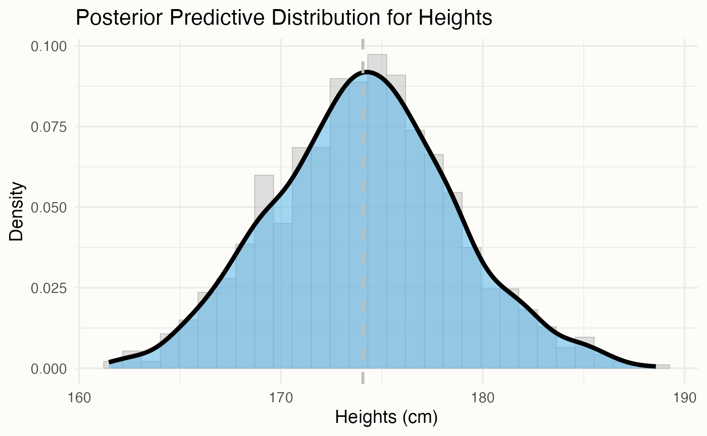
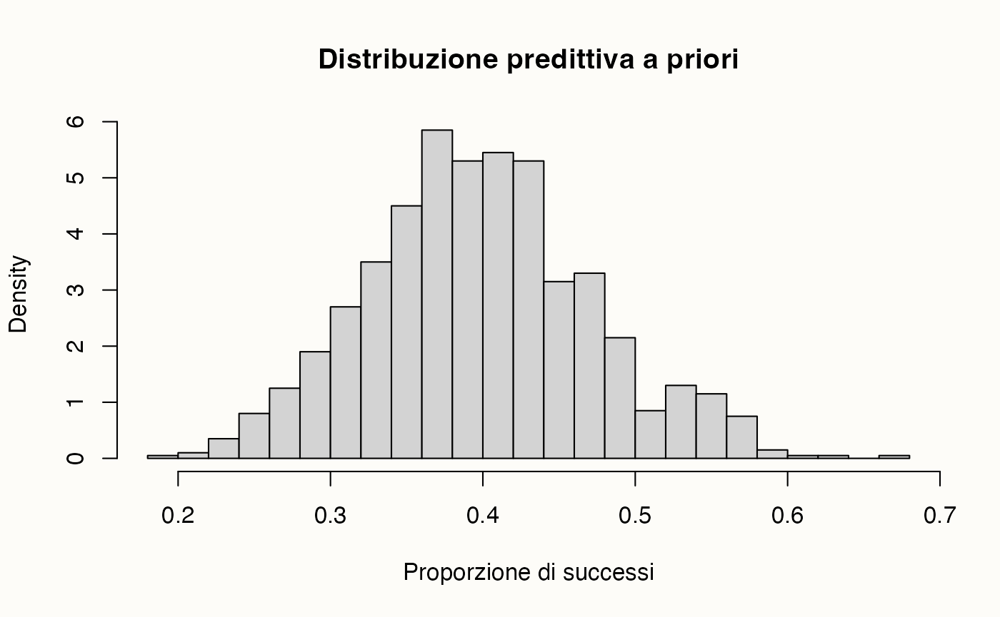
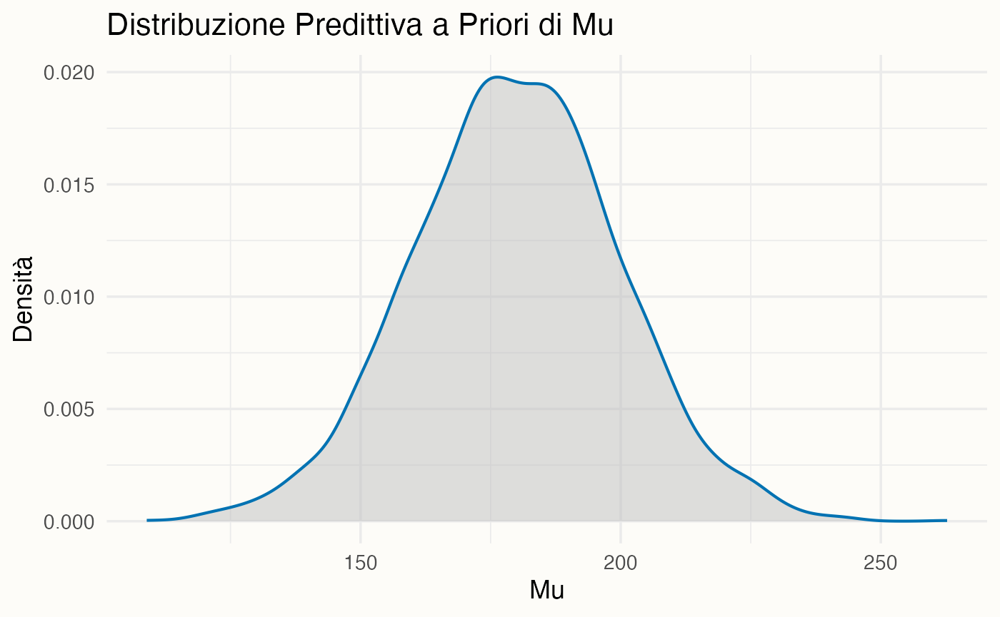
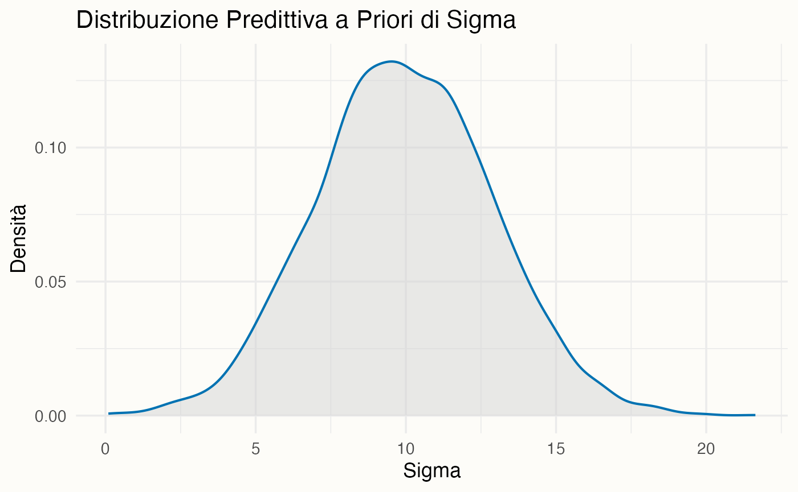

Impostiamo ambiente, pacchetti e seed. Se usi una cartella comune con funzioni (code/_common.R), caricala; in caso contrario, puoi ignorare la prima riga.
In questo capitolo esamineremo in dettaglio le distribuzioni predittive a priori e a posteriori usando cmdstanr. La distribuzione predittiva a priori rappresenta le aspettative sui dati prima di qualsiasi osservazione reale, riflettendo le conoscenze preesistenti e le ipotesi sui parametri del modello. Essa fornisce un’indicazione delle caratteristiche che i dati potrebbero assumere in base al modello. Confrontare queste previsioni con i dati effettivamente osservati consente di valutare la validità delle ipotesi incorporate nel modello.
La distribuzione predittiva è spesso di maggiore interesse rispetto alla distribuzione a posteriori. Mentre la distribuzione a posteriori descrive l’incertezza sui parametri (ad esempio, la proporzione di palline rosse in un’urna), la distribuzione predittiva descrive l’incertezza sugli eventi futuri (ad esempio, il colore della pallina che verrà estratta in futuro). Questa differenza è cruciale, soprattutto quando si tratta di prevedere gli effetti di un intervento, come la somministrazione di un trattamento a un paziente.
La distribuzione predittiva a posteriori è inoltre fondamentale per valutare quanto le previsioni del modello siano coerenti con i dati osservati. Se le previsioni del modello risultano allineate con i dati raccolti, il modello può essere considerato accurato nel rappresentare il processo generativo sottostante. Questo confronto è essenziale per convalidare il modello e assicurarsi che le ipotesi riflettano adeguatamente la realtà osservata.
52.3 La distribuzione predittiva a posteriori
La distribuzione predittiva a posteriori offre una valutazione critica della coerenza tra i dati reali e quelli simulati dal modello (Gelman & Shalizi, 2013). Confrontando direttamente i dati osservati con quelli generati dal modello, essa permette di identificare eventuali discrepanze che potrebbero segnalare problemi nella specificazione del modello. In pratica, la PPC (Posterior Predictive Check) funge da test diagnostico, consentendo di rilevare e correggere eventuali carenze nel modello, migliorandone così le capacità predittive.
Per comprendere meglio il concetto, consideriamo la distribuzione predittiva a posteriori in termini di un modello coniugato normale-normale. Supponiamo di voler predire la media di una distribuzione normale futura, basandoci sui dati osservati e sulle nostre conoscenze a priori. La PPD ci offre uno strumento per calcolare queste probabilità, combinando le informazioni provenienti dai dati osservati con quelle fornite dalla distribuzione a priori.
Ad esempio, immaginiamo di aver raccolto dati sulle altezze di 100 persone, ottenendo una media campionaria di 170 cm e una deviazione standard campionaria di 10 cm. Il nostro obiettivo è stimare la media delle altezze in un futuro campione di \(n=100\) persone. La nostra conoscenza a priori sulla media delle altezze è rappresentata da una distribuzione normale con media 175 cm e deviazione standard di 5 cm.
In termini di notazione, possiamo esprimere questa distribuzione come \(P(\tilde{y} \mid \theta=\theta_1)\), dove \(\tilde{y}\) rappresenta un nuovo dato che è diverso dai dati attuali \(y\), e \(\theta_1\) è la media a posteriori. Tuttavia, in statistica bayesiana, è fondamentale incorporare tutta l’incertezza nei risultati. Poiché \(\theta_1\) è solo uno dei possibili valori per \(\theta\), dovremmo includere ogni valore di \(\theta\) per la nostra previsione. Per ottenere la migliore previsione, possiamo “mediare” le previsioni attraverso i diversi valori di \(\theta\), ponderando ciascun valore secondo la sua probabilità a posteriori.
La distribuzione risultante è la distribuzione predittiva a posteriori, che in notazione matematica è data da:
In questo modo, la distribuzione predittiva a posteriori combina le informazioni dai dati osservati con la conoscenza a priori, fornendo una previsione che riflette l’incertezza associata a tutti i possibili valori dei parametri del modello.
52.4 Distribuzione predittiva a posteriori nel modello normale-normale
Nel modello coniugato normale-normale, se i dati osservati \(Y = \{y_1, y_2, ..., y_n\}\) sono modellati come provenienti da una distribuzione normale con media \(\mu\) e varianza \(\sigma^2\), e assumendo una distribuzione a priori normale per \(\mu\), la distribuzione a posteriori di \(\mu\) sarà anch’essa normale.
52.4.1 Formule della distribuzione predittiva a posteriori
Dato che:
I dati osservati \(y_i \sim \mathcal{N}(\mu, \sigma^2)\)
La prior per \(\mu\) è \(\mu \sim \mathcal{N}(\mu_0, \tau_0^2)\)
La distribuzione a posteriori per \(\mu\) sarà:
\[
\mu \mid Y \sim \mathcal{N}(\mu_n, \tau_n^2)
\]
Pertanto, la distribuzione a posteriori per \(\mu\) è:
\[
\mu \mid Y \sim \mathcal{N}(174, 4.47^2)
\]
Per la distribuzione predittiva a posteriori, dobbiamo considerare anche la varianza della distribuzione futura. Se stiamo predicendo per \(n_{\text{fut}}=100\) nuove osservazioni, la varianza della media predittiva sarà:
Quindi, la distribuzione predittiva a posteriori è:
\[
\tilde{Y} \sim \mathcal{N}(174, 4.58^2)
\]
52.5 Implementazione con cmdstanr
Per illustrare come viene generata la distribuzione predittiva a posteriori nel contesto del modello normale-normale, possiamo utilizzare cmdstanr per eseguire l’analisi. Il codice seguente mostra come configurare il modello e generare previsioni.
# Dati osservatiset.seed(123)# Imposta il seed per la riproducibilitày_observed<-rnorm(100, 170, 10)mean_y<-mean(y_observed)std_y<-sd(y_observed)# Parametri a priorimu_0<-175tau_0<-5# Parametri posterioritau_n_sq<-(tau_0^2*std_y^2)/(tau_0^2+std_y^2)tau_n<-sqrt(tau_n_sq)mu_n<-(tau_0^2*mean_y+std_y^2*mu_0)/(tau_0^2+std_y^2)# Parametri predittivin_fut<-100sigma_pred_sq<-tau_n_sq+(std_y^2/n_fut)sigma_pred<-sqrt(sigma_pred_sq)mu_pred<-mu_n# Simulazioniy_pred_samples<-rnorm(1000, mu_pred, sigma_pred)# Dati per ggplotdata<-data.frame(Heights =y_pred_samples)# Graficop<-ggplot(data, aes(x =Heights))+geom_histogram(aes(y =..density..), bins =30, fill ="gray", colour ="gray", alpha =0.5)+geom_density(colour ="black", size =1.5)+geom_vline( xintercept =mu_pred, colour ="gray", linetype ="dashed", size =1)+labs(title ="Posterior Predictive Distribution for Heights", x ="Heights (cm)", y ="Density")+theme(legend.position ="none")# Visualizza il graficoprint(p)

Questo codice produce un grafico che illustra visivamente la distribuzione predittiva a posteriori per le altezze nel nostro campione di 100 nuove osservazioni, tenendo conto sia dei dati osservati che delle nostre aspettative iniziali.
In sintesi, la distribuzione predittiva a posteriori è stata generata nel modo seguente:
Campioniamo un valore \(\mu\) dalla distribuzione a posteriori di \(\mu\).
Campioniamo un valore \(\sigma\) dalla distribuzione a posteriori di \(\sigma\).
Utilizziamo questi valori per generare un campione dalla distribuzione normale con parametri \(\mu\) e \(\sigma\).
Ripetiamo questo processo molte volte.
La distribuzione dei valori ottenuti da questi campionamenti costituisce la distribuzione predittiva a posteriori.
52.6 Metodo MCMC
Quando usiamo un PPL come Stan, la distribuzione predittiva viene stimata mediante il campionamento da una catena di Markov, che è particolarmente utile in scenari complessi dove l’analisi analitica potrebbe essere impraticabile. Attraverso i metodi MCMC, si stimano le potenziali osservazioni future \(p(\tilde{y} \mid y)\), indicate come \(p(y^{rep} \mid y)\), seguendo questi passaggi:
Si campiona \(\theta_i \sim p(\theta \mid y)\): Viene selezionato casualmente un valore del parametro (o dei parametri) dalla distribuzione a posteriori.
Si campiona \(y^{rep} \sim p(y^{rep} \mid \theta_i)\): Viene scelta casualmente un’osservazione dalla funzione di verosimiglianza, condizionata al valore del parametro (o dei parametri)ottenuto nel passo precedente.
Ripetendo questi due passaggi un numero sufficiente di volte, l’istogramma risultante approssimerà la distribuzione predittiva a posteriori.
Esaminiamo ora come ottenere la distribuzione predittiva a posteriori con Stan per i dati dell’esempio precedente. Iniziamo creando le distribuzioni a posteriori di \(\mu\) e \(\sigma\).
Definiamo un dizionario che contiene i dati.
stan_data_gauss=list( N =length(y_observed), y =y_observed, mu_prior =180, sigma_prior =20, sigma_prior_mean =10, sigma_prior_sd =3)
# Path to the Stan filestan_file<-here::here("stan", "gaussian_model.stan")# Create a CmdStanModel objectmod<-cmdstan_model(stan_file)
mod$print()#> data {#> int<lower=0> N; // number of observations#> vector[N] y; // observed data#> real mu_prior; // prior mean for mu#> real<lower=0> sigma_prior; // prior standard deviation for mu#> real<lower=0> sigma_prior_mean; // prior mean for sigma#> real<lower=0> sigma_prior_sd; // prior standard deviation for sigma#> }#> parameters {#> real mu; // parameter of interest#> real<lower=0> sigma; // parameter for the standard deviation#> }#> model {#> mu ~ normal(mu_prior, sigma_prior); // prior for mu#> sigma ~ normal(sigma_prior_mean, sigma_prior_sd); // prior for sigma#> y ~ normal(mu, sigma); // likelihood#> }#> generated quantities {#> array[N] real y_rep;#> for (n in 1 : N) {#> y_rep[n] = normal_rng(mu, sigma);#> }#> }
La distribuzione predittiva a posteriori è utilizzata per eseguire i controlli predittivi a posteriori (PPC), noti come Posterior Predictive Checks. I PPC consistono in un confronto grafico tra \(p(y^{rep} \mid y)\), ossia la distribuzione delle osservazioni future previste, e i dati osservati \(y\). Questo confronto visivo permette di valutare se il modello utilizzato è adeguato per descrivere le proprietà dei dati osservati.
Oltre al confronto grafico tra le distribuzioni \(p(y)\) e \(p(y^{rep})\), è possibile effettuare un confronto tra le distribuzioni di varie statistiche descrittive calcolate su diversi campioni \(y^{rep}\) e le corrispondenti statistiche calcolate sui dati osservati. Tipicamente, vengono considerate statistiche descrittive come la media, la varianza, la deviazione standard, il minimo o il massimo, ma è possibile confrontare qualsiasi altra statistica rilevante.
I controlli predittivi a posteriori offrono un valido strumento per un’analisi critica delle prestazioni del modello e, se necessario, per apportare eventuali modifiche o considerare modelli alternativi più adatti ai dati in esame.
52.7 Distribuzione Predittiva a Priori
La verifica predittiva a priori è un metodo fondamentale per esplorare le implicazioni dei tuoi prior. Genera dati simulati basandosi unicamente sui prior, ignorando completamente i dati osservati. Questo permette di rispondere a domande cruciali come:
I dati generati dal prior riflettono scenari plausibili?
Il prior è troppo restrittivo o troppo ampio rispetto ai dati attesi?
Questa verifica è particolarmente utile per identificare eventuali incongruenze o assunzioni non realistiche prima di raccogliere i dati osservati.
52.7.1 Modello Beta-Binomiale
Iniziamo con il caso più semplice. Il modello beta-binomiale è un esempio classico per illustrare la verifica predittiva a priori. In questo modello:
theta rappresenta la probabilità di successo.
Il prior su theta è distribuito secondo una distribuzione Beta parametrizzata da alpha_prior e beta_prior.
I dati (y) seguono una distribuzione Bernoulliana condizionata su theta.
Il modello Stan per l’inferenza sui dati osservati è il seguente:
data {
int<lower=0> N; // Numero di osservazioni
array[N] int<lower=0, upper=1> y; // Dati osservati (successi)
real<lower=0> alpha_prior; // Parametro alpha del prior Beta
real<lower=0> beta_prior; // Parametro beta del prior Beta
}
parameters {
real<lower=0, upper=1> theta; // Probabilità di successo
}
model {
theta ~ beta(alpha_prior, beta_prior); // Prior su theta
y ~ bernoulli(theta); // Likelihood
}
Per eseguire la simulazione dalla distribuzione predittiva a priori, rimuoviamo il blocco model e utilizziamo generated quantities per simulare:
l’estrazione di un valore per theta dalla distribuzione Beta specificata dai parametri del prior;
la generazione di successi simulati (y_sim) dalla distribuzione Bernoulliana condizionata su theta.
Compiliamo il modello:
# Create a CmdStanModel objectmod_prior<-cmdstan_model(here::here("stan", "betabinomial_prior.stan"))
Esaminiamo il modello:
mod_prior$print()#> data {#> int<lower=0> N; // Numero di osservazioni#> real<lower=0> alpha_prior; // Parametro alpha del prior Beta#> real<lower=0> beta_prior; // Parametro beta del prior Beta#> }#> generated quantities {#> real<lower=0, upper=1> theta_prior; // Valore estratto da Beta(alpha_prior, beta_prior)#> array[N] int<lower=0, upper=1> y_sim; // Osservazioni simulate#> #> theta_prior = beta_rng(alpha_prior, beta_prior); // Generazione di theta#> for (n in 1:N) {#> y_sim[n] = bernoulli_rng(theta_prior); // Simulazione dei successi#> }#> }
In questo script abbiamo
eliminato il blocco model: Questo blocco serve per l’inferenza Bayesiana, ma non è necessario per generare dati a priori.
aggiunto il blocco generated quantities: In questo blocco generiamo quantità di interesse, come i dati simulati y_sim e il valore di theta estratto dalla distribuzione a priori.
utilizzato la funzione beta_rng per estrarre un valore per theta dalla distribuzione \(\mathcal{Beta}\) definita dai parametri alpha_prior e beta_prior. Questo valore rappresenta una possibile realizzazione del parametro prima di osservare i dati.
utilizzato la funzione binomial_rng per simulare N osservazioni dalla distribuzione binomiale. Il parametro di successo theta è fissato al valore estratto theta_prior.
In sostanza, questo codice ci permette di generare un dataset simulato che potrebbe essere osservato se il processo stocastico fosse governato unicamente dai parametri specificati nella distribuzione a priori. In questo modo, possiamo valutare le proprietà del modello e la sua capacità di generare dati simili a quelli reali, prima ancora di avere a disposizione i dati osservati.
La distribuzione a priori rappresenta la nostra conoscenza o credenza sul valore del parametro theta prima di osservare i dati. Scegliendo diversi valori per alpha_prior e beta_prior, possiamo specificare diverse distribuzioni a priori e quindi esplorare come queste influenzano i risultati della simulazione.
I dati richiesti dal modello vengono specificati nel modo seguente:
# Dati osservatiN<-100# Numero di osservazioni# Parametri del prioralpha_prior<-4beta_prior<-6# Dati per Stanstan_data_prior<-list( N =N, alpha_prior =alpha_prior, beta_prior =beta_prior)
Eseguiamo il campionamento:
# Simulazione del priorfit_prior<-mod_prior$sample( data =stan_data_prior, chains =4, iter_sampling =1000, iter_warmup =0, fixed_param =TRUE, show_messages =FALSE)
Si noti l’argomento fixed_param = TRUE in quanto nessun parametro viene aggiornato.
Estraiamo i campioni a posteriori e visualizziamo i risultati:
# Estraiamo theta_prior e y_simtheta_prior<-fit_prior$draws("theta_prior")y_sim<-fit_prior$draws("y_sim")
Generiamo la distribuzione a priori di theta:
# Distribuzione a priori di thetahist(theta_prior, main ="Distribuzione a priori di theta", xlab ="theta", freq =FALSE)
Costruiamo la distribuzione predittiva a priori della proporzione di successi:
# Distribuzione dei successi simulatiy_sim_mean<-rowMeans(y_sim)hist(y_sim_mean, breaks =20, main ="Distribuzione predittiva a priori", xlab ="Proporzione di successi", freq =FALSE)

La distribuzione predittiva a priori mostra che i dati simulati riflettono il comportamento atteso dato il prior. Per il prior \(\mathcal{Beta}(4, 6)\):
La media attesa di theta è \(\mathbb{E}[\theta] = \frac{\alpha}{\alpha + \beta} = 0.4\).
La varianza attesa è \(\text{Var}(\theta) = \frac{\alpha \beta}{(\alpha + \beta)^2 (\alpha + \beta + 1)}\).
Con 14 successi su 100 osservazioni reali, corrispondenti a una proporzione di 0.14, notiamo che:
Il prior \(\mathcal{Beta}(4, 6)\) è informativo, con un centro più alto rispetto ai dati osservati.
Se vogliamo un prior meno concentrato (ad esempio \(\mathcal{Beta}(2, 2)\)), i dati avranno un peso maggiore.
In conclusione,
utilizzare un prior informativo è appropriato se abbiamo conoscenze precedenti robuste;
se vogliamo un prior che lasci maggior spazio ai dati osservati, potremmo scegliere distribuzioni più ampie come \(\mathcal{Beta}(2, 2)\).
La verifica predittiva a priori è uno strumento potente per convalidare queste scelte.
52.7.2 Modello Gaussiano
Consideriamo un secondo esempio, facciamo riferimento al caso discusso in precedenza dove veniva considerato un campione di dati gaussiani e un modello gaussiano in cui le distribuzioni a priori per μ e σ erano gaussiane.
Compiliamo e stampiamo il modello Stan per generare la distribuzione predittiva a priori:
mod_gauss_prior$print()#> data {#> int<lower=0> N; // number of observations#> real mu_prior; // prior mean for mu#> real<lower=0> sigma_prior; // prior standard deviation for mu#> real<lower=0> sigma_prior_mean; // prior mean for sigma#> real<lower=0> sigma_prior_sd; // prior standard deviation for sigma#> }#> generated quantities {#> real mu = normal_rng(mu_prior, sigma_prior); // prior draw for mu#> real<lower=0> sigma = normal_rng(sigma_prior_mean, sigma_prior_sd); // prior draw for sigma#> array[N] real y_rep;#> for (n in 1 : N) {#> y_rep[n] = normal_rng(mu, sigma);#> }#> }
Creaiamo un grafico della distribuzione a priori di mu:
draws_df|>ggplot(aes(x =mu))+geom_density(fill ="gray", alpha =0.5)+labs(title ="Distribuzione Predittiva a Priori di Mu", x ="Mu", y ="Densità")

Distribuzione a priori di sigma:
draws_df|>ggplot(aes(x =sigma))+geom_density(fill ="lightgray", alpha =0.5)+labs(title ="Distribuzione Predittiva a Priori di Sigma", x ="Sigma", y ="Densità")

Il grafico della distribuzione predittiva a priori ci mostra che i prior utilizzati nel codice Stan implicano una distribuzione della variabile di interesse y che è approssimativamente normale con media di 180 e deviazione standard di 22. Questo prior predictive check garantisce che le distribuzioni a priori dei parametri mu e sigma siano realistiche e adeguate per l’analisi dei dati considerati. Un discorso simile si può fare per sigma. Questo passaggio consente di identificare e correggere eventuali ipotesi errate prima di procedere con l’analisi dei dati osservati, migliorando così la validità dei risultati ottenuti.
52.8 Riflessioni Conclusive
Le distribuzioni predittive a priori e a posteriori, pur essendo generate in modo simile, differiscono per la fonte di informazione utilizzata nella loro costruzione.
Distribuzione Predittiva a Priori: Questa distribuzione rappresenta le nostre aspettative sui dati prima che qualsiasi osservazione effettiva sia disponibile. Per costruirla, prendiamo i valori dei parametri dalla distribuzione a priori e li utilizziamo nella funzione di verosimiglianza per generare dati simulati. La distribuzione risultante di questi dati generati è la distribuzione predittiva a priori, che riflette le nostre conoscenze e incertezze iniziali, prima di osservare i dati reali.
Distribuzione Predittiva a Posteriori: Dopo aver osservato i dati, aggiorniamo le nostre credenze sui parametri utilizzando il teorema di Bayes, ottenendo così la distribuzione a posteriori dei parametri. La distribuzione predittiva a posteriori viene quindi generata prendendo valori dei parametri dalla distribuzione a posteriori, che ora incorpora l’informazione ottenuta dai dati osservati, e utilizzandoli nella funzione di verosimiglianza per generare nuovi dati simulati. Questa distribuzione riflette le nostre previsioni sui dati futuri o non osservati, dopo aver tenuto conto dei dati già raccolti.
La differenza principale tra queste due distribuzioni predittive risiede nella distribuzione dei parametri utilizzata: nella distribuzione predittiva a priori si utilizzano i parametri estratti dal prior, mentre nella distribuzione predittiva a posteriori si utilizzano i parametri estratti dal posterior. La distribuzione predittiva a posteriori è generalmente più informativa poiché integra i dati osservati, migliorando le previsioni future.
È cruciale per l’integrità del modello che la distribuzione predittiva a posteriori sia coerente con la distribuzione dei dati osservati. Per verificare questa coerenza, si utilizzano le verifiche predittive a posteriori, confrontando la distribuzione predittiva con i dati empirici tramite tecniche come le stime di densità kernel (KDE). Questo confronto permette di valutare quanto bene il modello riesca ad approssimare la struttura reale dei dati e la sua capacità di fornire previsioni affidabili.
Ad esempio, consideriamo un modello gaussiano con varianza \(\sigma^2\) nota:
dove \(\sigma^2/n\) rappresenta l’incertezza epistemica legata a \(\theta\). La distribuzione predittiva a posteriori per un nuovo valore \(\tilde{y}\) sarà:
Gelman, A., & Shalizi, C. R. (2013). Philosophy and the practice of Bayesian statistics. British Journal of Mathematical and Statistical Psychology, 66(1), 8–38.